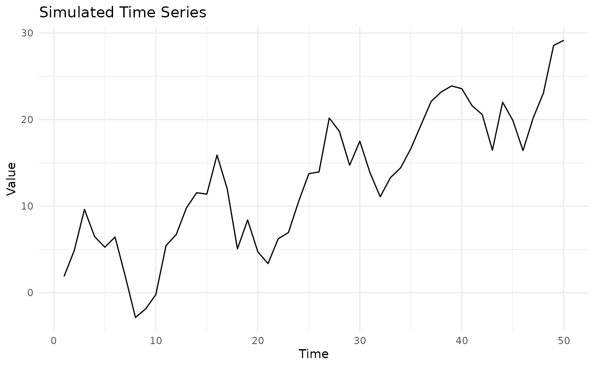
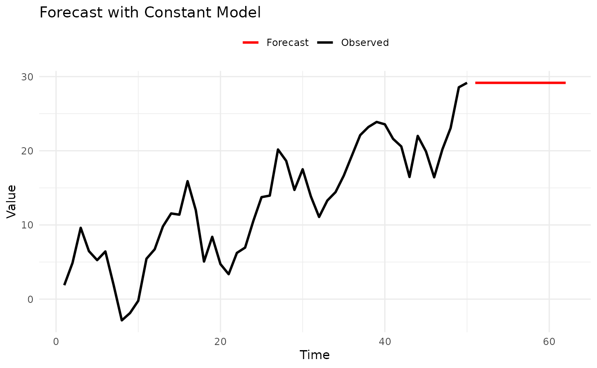

vignettes/forecastbaselines.Rmd
forecastbaselines.Rmdforecastbaselines provides an R interface to the ForecastBaselines.jl Julia package, giving you access to 10 baseline forecasting models with uncertainty quantification and evaluation tools.
This vignette will walk you through:
You’ll need both Julia and R installed:
Julia (>= 1.9)
julia --version
R (>= 3.5.0)
# Install from GitHub
# install.packages("remotes")
remotes::install_github("epiforecasts/forecastbaselines")The first time you use the package, you need to set up the Julia backend:
library(forecastbaselines)
#> Julia version 1.11.9 at location /opt/hostedtoolcache/julia/1.11.9/x64/bin will be used.
#> Loading setup script for JuliaCall...
#> Finish loading setup script for JuliaCall.
#> forecastbaselines: Julia backend loaded successfully
library(scoringutils)
library(ggplot2)
# One-time setup: installs Julia packages
setup_ForecastBaselines()
#> Initializing Julia...
#> Julia initialized successfully
#> Checking ForecastBaselines.jl installation...
#> ForecastBaselines.jl is already installed
#> Loading R conversion helpers...
#> forecastbaselines setup complete!This will:
Note: This only needs to be done once. Subsequent R sessions will automatically connect to Julia.
Let’s create a simple forecast using the Constant (naive) model, which uses the last observed value as the forecast.
# Simulate a time series with trend and seasonality
set.seed(123)
n_total <- 62 # Total observations
n_train <- 50 # Training set size
time <- 1:n_total
trend <- 0.5 * time
seasonal <- 5 * sin(2 * pi * time / 12)
noise <- rnorm(n_total, sd = 2)
full_data <- trend + seasonal + noise
# Split into training and test sets
data <- full_data[1:n_train]
truth <- full_data[(n_train + 1):n_total]
# Plot the full series
plot_df <- data.frame(
time = 1:n_total,
value = full_data,
set = c(rep("Training", n_train), rep("Test", n_total - n_train))
)
ggplot(plot_df, aes(x = time, y = value, color = set)) +
geom_line() +
labs(title = "Simulated Time Series", x = "Time", y = "Value") +
theme_minimal()
# Create a Constant (naive) model
model <- ConstantModel()
# Fit the model to the data
fitted <- fit_baseline(data, model)
# Forecast 12 steps ahead
horizon <- 1:12
fc <- forecast(fitted,
interval_method = NoInterval(),
horizon = horizon
)
# View the forecast
print(fc)
#> ForecastBaselines Forecast Object
#> ==================================
#>
#> Horizon: 1 to 12
#>
#> Components:
#> - Mean forecasts
#> - Median forecasts
# Access forecast values
fc$mean
#> [1] 29.16339 29.16339 29.16339 29.16339 29.16339 29.16339 29.16339 29.16339
#> [9] 29.16339 29.16339 29.16339 29.16339
# Plot data and forecast
plot_df <- rbind(
data.frame(time = 1:n_train, value = data, type = "Observed"),
data.frame(time = (n_train + 1):(n_train + 12), value = fc$mean, type = "Forecast")
)
ggplot(plot_df, aes(x = time, y = value, color = type)) +
geom_line(linewidth = 1) +
scale_color_manual(values = c("Observed" = "black", "Forecast" = "red")) +
labs(title = "Forecast with Constant Model", x = "Time", y = "Value", color = NULL) +
theme_minimal() +
theme(legend.position = "top")
Most real-world forecasts need uncertainty quantification. Let’s add prediction intervals.
The empirical method generates prediction intervals by bootstrapping from residuals:
# Forecast with prediction intervals
fc_with_intervals <- forecast(
fitted,
interval_method = EmpiricalInterval(
n_trajectories = 1000,
seed = 42
),
horizon = 1:12,
levels = c(0.50, 0.90, 0.95),
include_median = FALSE,
model_name = "Constant"
)
# Convert to hubverse format for visualization
constant_hubverse <- as_hubverse(
fc_with_intervals,
start_date = as.Date("2024-01-01"),
horizon_unit = "week",
observed_data = full_data
)
# Visualize with hubVis
library(hubVis)
hubVis::plot_step_ahead_model_output(
constant_hubverse$model_output,
constant_hubverse$target_data,
intervals = c(0.5, 0.9, 0.95),
interactive = TRUE
)
#> Warning: ! `model_out_tbl` must be a `model_out_tbl`. Class
#> applied by defaultLet’s use an ARMA model for better forecasting:
# Create ARMA(2,1) model
arma_model <- ARMAModel(p = 2, q = 1)
# Fit and forecast with prediction intervals
arma_fitted <- fit_baseline(data, arma_model)
arma_fc <- forecast(
arma_fitted,
interval_method = EmpiricalInterval(n_trajectories = 1000),
horizon = 1:12,
levels = c(0.50, 0.90, 0.95),
include_median = FALSE,
model_name = "ARMA(2,1)"
)
# Convert to hubverse format for visualization
arma_hubverse <- as_hubverse(
arma_fc,
start_date = as.Date("2024-01-01"),
horizon_unit = "week",
observed_data = full_data
)
# Visualize with hubVis
hubVis::plot_step_ahead_model_output(
arma_hubverse$model_output,
arma_hubverse$target_data,
intervals = c(0.5, 0.9, 0.95),
interactive = TRUE
)
#> Warning: ! `model_out_tbl` must be a `model_out_tbl`. Class
#> applied by defaultThe hubVis visualizations show:
This package integrates seamlessly with scoringutils for forecast evaluation using proper scoring rules.
For probabilistic forecasts with prediction intervals, use WIS (Weighted Interval Score) and interval coverage:
For probabilistic forecasts, use proper scoring rules like WIS (Weighted Interval Score):
# Create multiple models
models <- list(
Constant = ConstantModel(),
ARMA = ARMAModel(p = 1, q = 1),
Marginal = MarginalModel()
)
# Fit each model with prediction intervals
forecasts <- lapply(names(models), function(name) {
fitted <- fit_baseline(data, models[[name]])
forecast(fitted,
interval_method = EmpiricalInterval(n_trajectories = 1000),
horizon = 1:12,
levels = c(0.50, 0.90, 0.95),
include_median = FALSE,
model_name = name
)
})
# Combine all forecasts for comparison
all_quantiles <- do.call(rbind, lapply(forecasts, function(fc) {
scoringutils::as_forecast_quantile(add_truth(fc, truth))
}))
# Re-validate as forecast object after rbind
all_quantiles <- scoringutils::as_forecast_quantile(all_quantiles)
# Score all models
scores <- scoringutils::score(all_quantiles)
#> ℹ Median not available, interpolating median from the two innermost quantiles
#> in order to compute bias.
#> Warning: ! Computation for `interval_coverage_90` failed. Error: ! To compute the
#> interval coverage for an interval range of "90%", the 0.05 and 0.95 quantiles
#> are required.
#> Warning: ! Computation for `ae_median` failed. Error: ! In order to compute the absolute
#> error of the median, "0.5" must be among the quantiles given.
score_summary <- scoringutils::summarise_scores(scores, by = "model")
# Display key metrics
comparison <- data.frame(
Model = score_summary$model,
WIS = round(score_summary$wis, 2),
Coverage_50 = paste0(round(score_summary$interval_coverage_50 * 100, 1), "%"),
Coverage_90 = paste0(round(score_summary$interval_coverage_90 * 100, 1), "%"),
Coverage_95 = paste0(round(score_summary$interval_coverage_95 * 100, 1), "%")
)
print(comparison)
#> Model WIS Coverage_50 Coverage_90 Coverage_95
#> 1 Constant 1.32 50% % %
#> 2 ARMA 1.33 41.7% % %
#> 3 Marginal 4.14 8.3% % %
cat("\nBest model by WIS:", comparison$Model[which.min(score_summary$wis)], "\n")
#>
#> Best model by WIS: Constant
# Visualize model comparison with hubVis
comparison_hubverse <- as_hubverse(
all_quantiles,
start_date = as.Date("2024-01-01"),
horizon_unit = "week",
observed_data = full_data
)
hubVis::plot_step_ahead_model_output(
comparison_hubverse$model_output,
comparison_hubverse$target_data,
intervals = c(0.5, 0.9, 0.95),
interactive = TRUE
)
#> Warning: ! `model_out_tbl` must be a `model_out_tbl`. Class
#> applied by defaultFor data with strong seasonal patterns, use seasonal models:
# Generate seasonal data: 15 years training (Jan 2010-Dec 2024) + 1 year test (2025)
set.seed(789)
n_total_months <- 192 # 16 years total
n_train_months <- 180 # 15 years for training
full_seasonal <- 10 + 5 * sin(2 * pi * (1:n_total_months) / 12) + rnorm(n_total_months, sd = 0.5)
seasonal_data <- full_seasonal[1:n_train_months]
future_seasonal <- full_seasonal[(n_train_months + 1):n_total_months]
# STL decomposition model
stl_model <- STLModel(s = 12)
stl_fitted <- fit_baseline(seasonal_data, stl_model)
stl_fc <- forecast(stl_fitted,
interval_method = EmpiricalInterval(n_trajectories = 1000),
horizon = 1:12,
levels = c(0.50, 0.90, 0.95),
include_median = FALSE,
truth = future_seasonal,
model_name = "STL"
)
# Last Similar Dates model
lsd_model <- LSDModel(window_width = 10, s = 12)
lsd_fitted <- fit_baseline(seasonal_data, lsd_model)
lsd_fc <- forecast(lsd_fitted,
interval_method = EmpiricalInterval(n_trajectories = 1000),
horizon = 1:12,
levels = c(0.50, 0.90, 0.95),
include_median = FALSE,
truth = future_seasonal,
model_name = "LSD"
)
# Combine forecasts for hubVis visualization
stl_quantile <- scoringutils::as_forecast_quantile(stl_fc)
lsd_quantile <- scoringutils::as_forecast_quantile(lsd_fc)
combined_quantile <- rbind(stl_quantile, lsd_quantile)
# Convert to hubverse format (data from Jan 2010 to Dec 2025)
seasonal_hubverse <- as_hubverse(
combined_quantile,
start_date = as.Date("2010-01-01"),
horizon_unit = "month",
observed_data = full_seasonal
)
# Filter to show only last 5 years + forecast for cleaner visualization
cutoff_date <- as.Date("2020-01-01")
filtered_target <- seasonal_hubverse$target_data[seasonal_hubverse$target_data$date >= cutoff_date, ]
filtered_output <- seasonal_hubverse$model_output[seasonal_hubverse$model_output$target_date >= cutoff_date, ]
# Visualize both models with hubVis
hubVis::plot_step_ahead_model_output(
filtered_output,
filtered_target,
intervals = c(0.5, 0.9, 0.95),
interactive = TRUE
)
#> Warning: ! `model_out_tbl` must be a `model_out_tbl`. Class
#> applied by defaultFor data with non-constant variance or non-negativity constraints, use transformations.
# Example: exponential growth (log transform stabilizes variance)
data_exp <- exp(rnorm(50, mean = 2, sd = 0.3))
# 1. Transform data
log_data <- log(data_exp)
# 2. Fit model on transformed scale
model <- ConstantModel()
fitted <- fit_baseline(log_data, model)
# 3. Forecast on transformed scale
fc <- forecast(fitted,
interval_method = NoInterval(),
horizon = 1:12
)
# 4. Back-transform to original scale
fc$mean <- exp(fc$mean)
# Now fc$mean is in the original scale
print(fc$mean)
#> [1] 5.863768 5.863768 5.863768 5.863768 5.863768 5.863768 5.863768 5.863768
#> [9] 5.863768 5.863768 5.863768 5.863768See vignette("transformations") for detailed guidance on
transformations.
forecastbaselines provides helpful utilities for working with forecast objects:
# Check what components are available
has_mean(fc) # TRUE
#> [1] TRUE
has_median(fc) # FALSE (not requested)
#> [1] TRUE
has_truth(fc) # FALSE (not provided)
#> [1] FALSE
# Add components
median_vals <- fc$mean # For demo, use mean as median
fc_with_median <- add_median(fc, median_vals)
has_median(fc_with_median) # TRUE
#> [1] TRUE
# Add truth values for scoring
fc_with_truth <- add_truth(fc, truth)
has_truth(fc_with_truth) # TRUE
#> [1] TRUE
# Filter/subset forecasts
fc_short <- truncate_horizon(fc, max_h = 5)
fc_selected <- filter_horizons(fc, horizons = c(1, 3, 6, 12))Now that you’ve learned the basics, explore:
vignette("forecast-models") - Detailed guide to all
10 models, when to use each, and their parameters
vignette("transformations") - Guide to data
transformations with examples
Package documentation - Run ?forecastbaselines or
help(package = "forecastbaselines")
Examples - Check the examples/ directory in the
package for complete workflows
# 1. Setup (once)
setup_ForecastBaselines()
# 2. Create model
model <- ARMAModel(p = 2, q = 1)
# 3. Fit to data
fitted <- fit_baseline(data, model)
# 4. Generate forecasts
fc <- forecast(fitted,
interval_method = EmpiricalInterval(n_trajectories = 1000),
horizon = 1:12,
levels = 0.95,
truth = truth_values,
model_name = "ARMA(2,1)"
)
# 5. Score forecasts
fc_point <- scoringutils::as_forecast_point(fc)
scores <- scoringutils::score(fc_point)
scores_summary <- scoringutils::summarise_scores(scores, by = "model")
mae <- scores_summary$ae_point
# Simple
ConstantModel() # Naive forecast
MarginalModel() # Sample from marginal distribution
# Seasonal
STLModel(s = 12) # Monthly seasonality
LSDModel(window_width = 10, s = 12) # Last similar dates
# Time Series
ARMAModel(p = 2, q = 1) # ARMA
ETSModel() # Exponential smoothingJulia not found:
# Specify Julia path manually
Sys.setenv(JULIA_HOME = "/path/to/julia/bin")
setup_ForecastBaselines()Package not loading:
# Check if Julia is set up
is_setup() # Should return TRUE
# Re-run setup if needed
setup_ForecastBaselines()Getting errors during forecasting:
# Check your data
summary(data) # No NAs or infinite values?
length(data) # Enough observations?
# Check model parameters
# e.g., ARMA needs p + q < length(data)For more help, see the GitHub Issues.